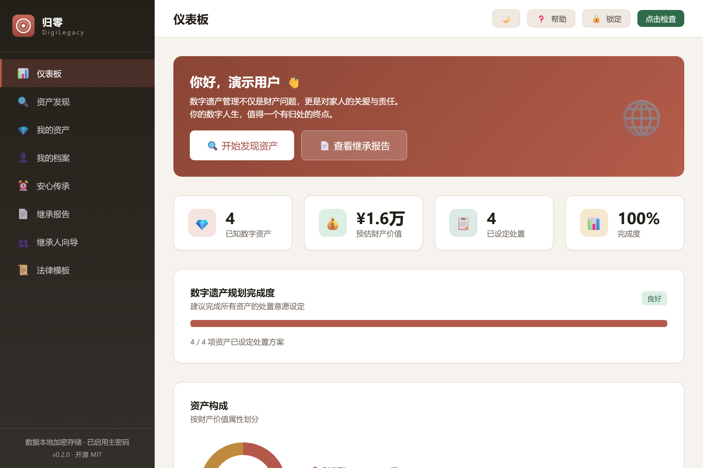
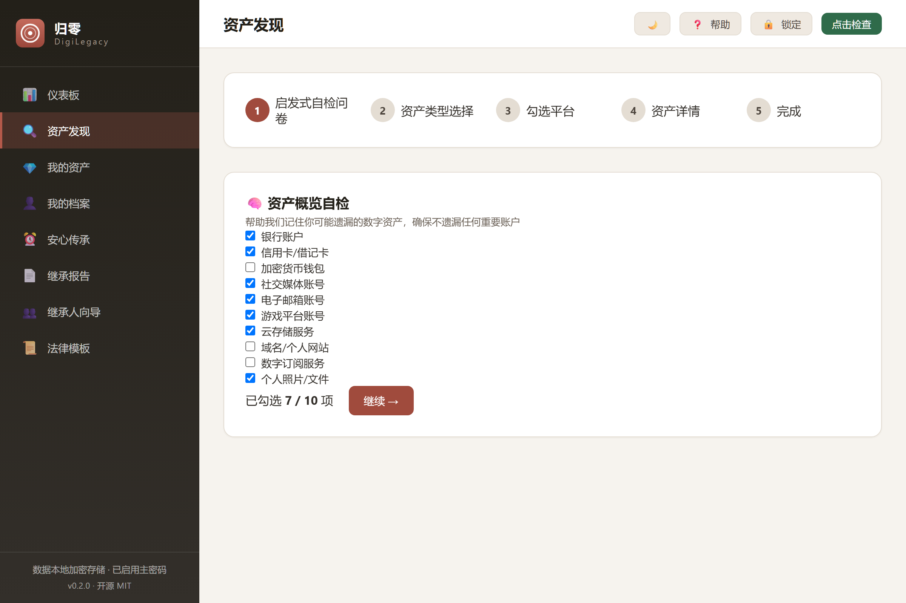
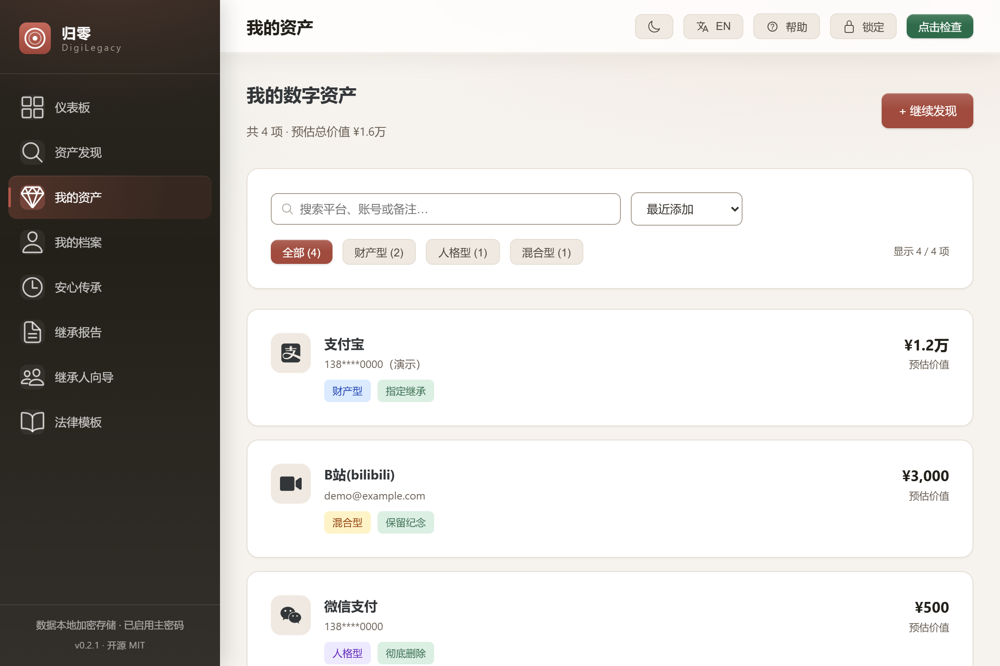
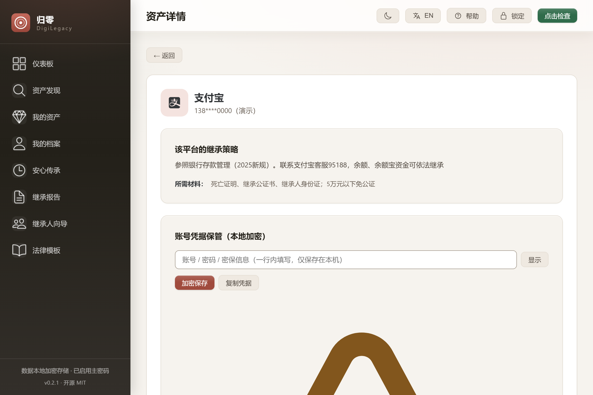
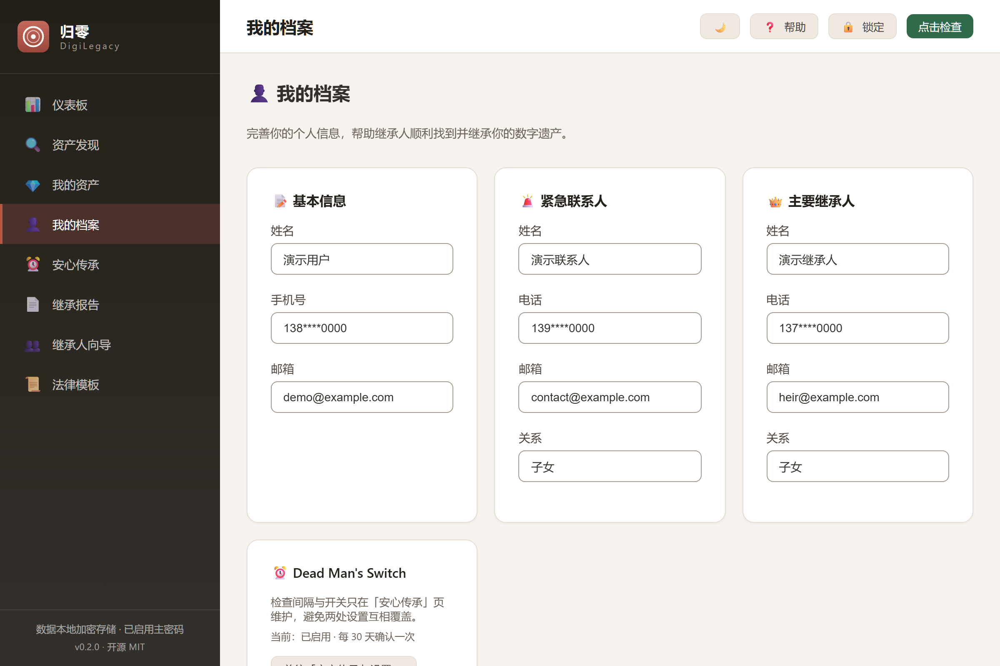
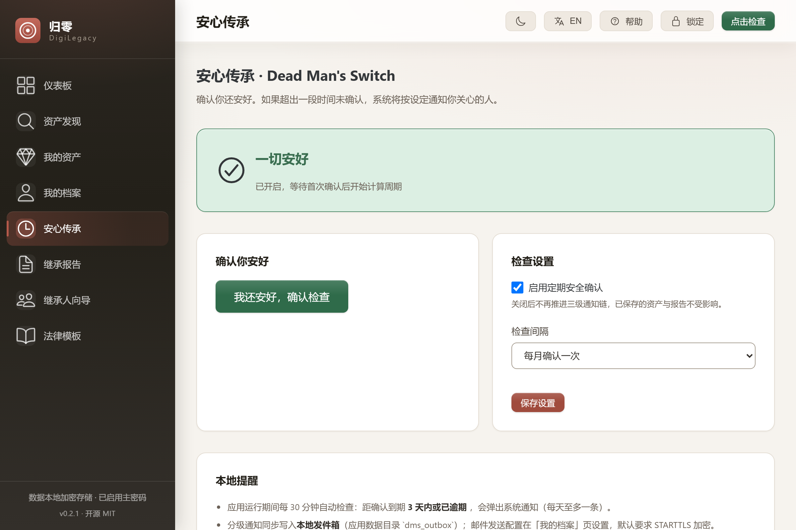
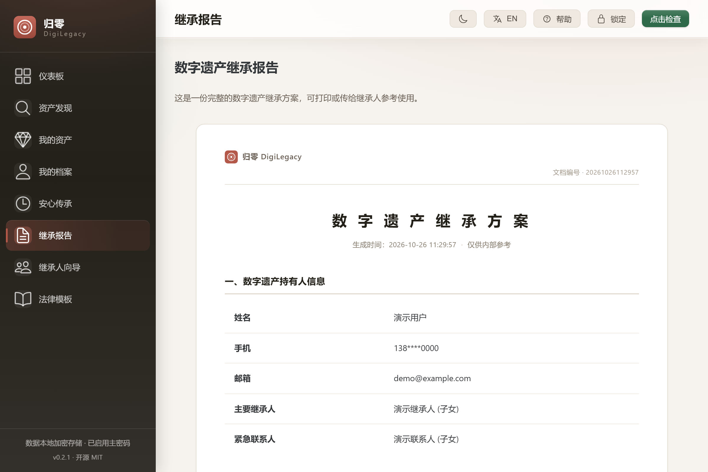
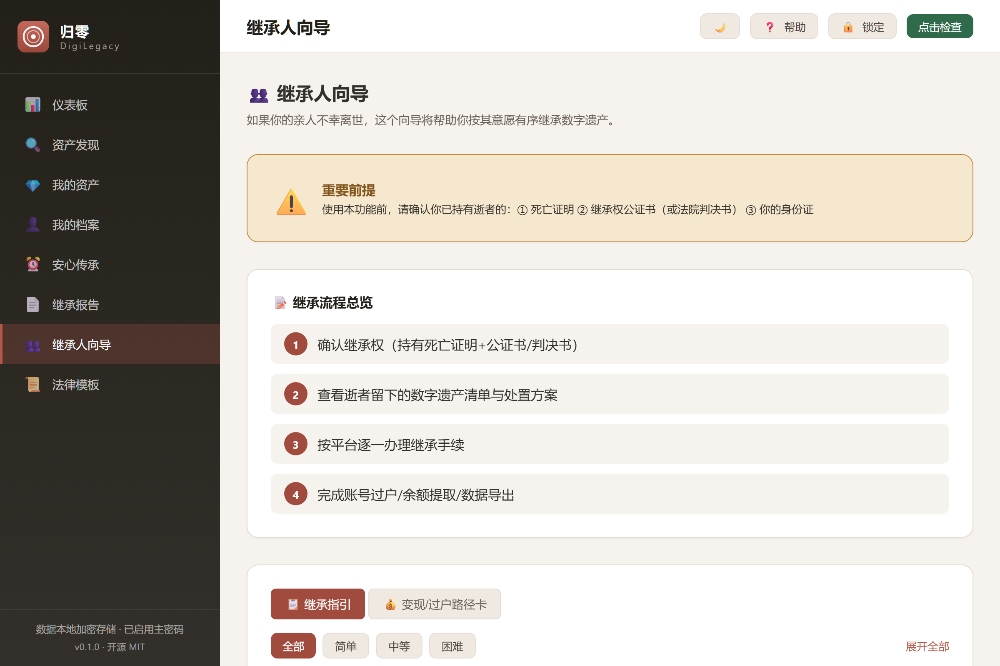
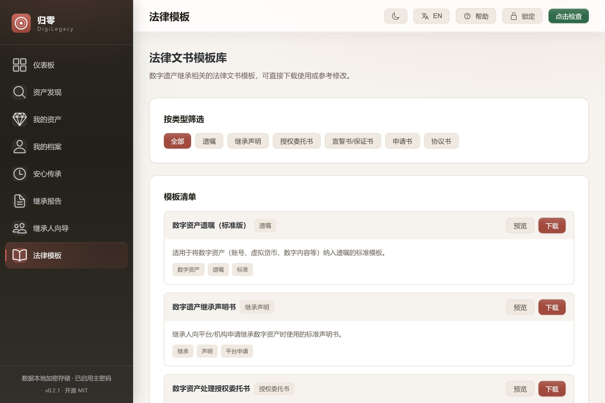
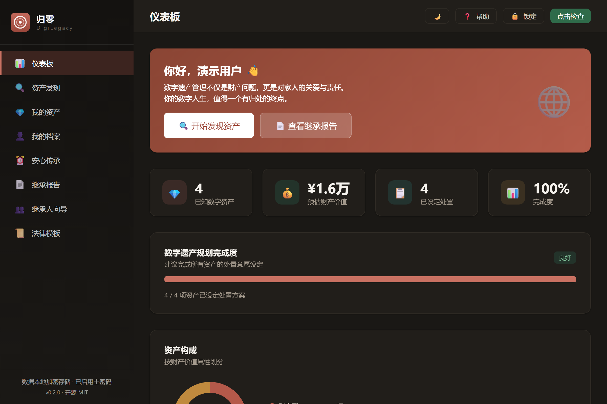

归零 · 数字遗产管理及继承系统
An open-source, local-first desktop app for digital legacy planning and digital inheritance. Discover every account you own, decide how each should be handled, and leave your family a ready-to-execute inheritance toolkit — with everything encrypted on your own machine.

When someone dies, their family usually cannot find — or access — what they left online.
Payment balances, game assets, subscription credits, creator income — scattered across dozens of platforms. Even the account owner cannot list them from memory.
A wallet balance can be inherited; the account itself often cannot. Game accounts have case law supporting property rights. Rules differ per platform and sit buried in terms of service.
A deadlock: platforms ask for a notarized certificate; notaries need to know what the accounts contain; the family does not know. The estate simply goes dormant.
The full path: discovery → registration → planning → documents → trigger → execution. Eight capabilities, one local database.
A built-in policy database of 152 platforms across 16 categories plus a guided self-check questionnaire — designed to surface accounts you have already forgotten. Search the whole catalogue by name.
Every asset is classified as property, personality, or mixed. Platform passwords are never stored; the app records where an account exists, not how to break into it.
Choose per asset: inherit by a named person, liquidate and distribute, memorialize, authorize viewing, delete permanently, donate, or take no action.
One click generates a print-ready HTML report and exports a ZIP toolkit (report, asset list, summary, instructions) in open formats — readable without this app.
Periodic check-in with a three-stage confirmation chain: remind you → notify your emergency contact → send inheritance instructions to your executor. Runs in the system tray, re-evaluating every 30 minutes; optional zero-content cloud heartbeat.
A wizard that walks family members through each platform's procedure, required documents and transfer path — plus six categories of legal document templates.
Full-text search across platform, account and notes; sort by recency, value, platform or disposal state; a donut chart splits property / personality / mixed at a glance.
Optionally store account credentials, AES-256-GCM encrypted on your machine. Excluded from reports and toolkits; the encrypted backup carries only ciphertext, unreadable without your master password.
A native desktop app, about 3.5 MB installed, 1200×800. The interface ships in Simplified Chinese and English; switch languages in the header. Click any shot to open it full size.









Digital legacy data is the most private data a person owns. So the architecture removes the question instead of promising an answer.
A zero-knowledge, local-first design: after you set a master password, account identifiers, credentials, profile fields and heir contacts are encrypted before they reach the database. The key is derived with PBKDF2-SHA256 (600,000 iterations) and lives only in memory — locking the app wipes it.
Setting a master password generates a one-time 24-character recovery key. Forget the password and you can still reset it and recover everything; the recovery key is rotated automatically on every password change.
There is no backend. Data lives in a single local SQLite file you can copy, back up or delete. The app makes no network requests; "open platform website" just hands a URL to your browser.
If you want reminders even when the app is closed, the heartbeat sends only a token. The server learns "this token is alive" and nothing else — never an asset, a credential or a name. A reference implementation is included (server/heartbeat-server.mjs).
Honest limitation: local encryption protects data at rest and cannot stop malware already running as your user, or someone who knows your master password. The recovery key is the only way back — write it down and keep it offline.
The full chain — discovery, registration, planning, documents, trigger, execution — is currently unoccupied. Existing tools each cover a fragment.
| Tool | Scope | What it leaves out |
|---|---|---|
| DigiLegacy | All six stages | — |
| Google Inactive Account Manager | Google accounts only | Any non-Google platform; no asset inventory; no planning workflow |
| Apple Digital Legacy | Apple ID access for a legacy contact | No inventory, no procedures, no disposal planning |
| Meta memorialization | Facebook / Instagram accounts | Passive marking only, no active planning |
| Password managers (1Password, Bitwarden…) | Credential handover | Answers "who gets the password", not "can it be inherited and how" |
| Dead man's switch tools (LastSignal, Aeterna…) | Timed message delivery | No asset inventory, no platform policy, no per-asset disposal plan |
| Offline will services / notary offices | Paper wills | No digital asset discovery; no platform-by-platform guidance |
Download the installer or the MSI from Releases. Windows 10/11, ~3.5 MB, no account, no sign-up.
# 1. Download from GitHub Releases
# DigiLegacy_*_x64-setup.exe (installer)
# DigiLegacy_*_x64_zh-CN.msi (MSI, for managed deployment)
# 2. Launch it. Your data stays in:
# %APPDATA%\com.digilegacy.app\digilegacy.dbOn first launch a short guided tour explains each screen. A built-in help centre explains the encryption model and the real capability boundaries of the reminder chain. Prefer to look around first? Open the interactive demo — same UI, mock data in your browser, no install.
git clone https://github.com/badhope/digilegacy.git
cd digilegacy
npm install
npm run tauri:dev # desktop dev mode
npm run tauri:build # produce installers
# Frontend only (browser preview with mock data):
npm run dev # http://localhost:1420
# Tests
cd src-tauri && cargo testStack: Tauri 2 (Rust) + Vue 3 + TypeScript + SQLite. 130 Rust tests, 364 frontend tests and 76 end-to-end tests, all passing.
Asset discovery, encrypted vault, disposal planning, report & toolkit export, dead man's switch with tray residency, recovery key, onboarding tour, help centre, zero-content heartbeat client & reference server, offline policy-patch channel, asset search & sort, composition chart, interactive browser demo, backup v2 covering heartbeat and policy patches, schema versioning.
More interface languages (Simplified Chinese and English already ship), encrypted cloud backup (requires a server you host or trust), mobile companion for check-ins (separate codebase), notification action buttons (native notification actions), macOS/Linux installers. None of these are started.
AI-assisted authoring — it would run once while the holder plans, and the generated guide would be reviewed and frozen into the toolkit so the family side stays offline. Not started, and no interface exists yet; the constraints it must satisfy are in the roadmap. Also: institution integrations, patent filings, community-contributed policy database.
Yes. The desktop app is MIT-licensed and permanently free — the whole source is open. Cloud conveniences (encrypted backup, assisted setup) are planned as optional paid services; the local app stays free.
Nothing breaks — this is the point of the local-first, zero-knowledge design. There is no server to switch off: your data is a local SQLite file, exports are open formats, and the code is public — anyone can fork and continue. That is exactly why we chose this architecture.
It never stores platform passwords in plaintext. You can optionally save credentials, and those are encrypted with your master password on your machine. Credentials are deliberately excluded from every exported report and toolkit.
No, and any tool claiming to do so would be lying or would need your credentials. DigiLegacy does guided discovery: it knows 152 mainstream platforms and prompts you with questions that help you remember, then you confirm. The final list is always yours.
With the tray resident (default) it evaluates every 30 minutes while running, and can be set to start with Windows. For reminders when the machine is off, enable the optional zero-content cloud heartbeat — the server only sees a token.
The policy database covers 152 platforms used in mainland China (WeChat, Alipay, Taobao, Bilibili, Steam and more) because that is where platform inheritance rules are most opaque. The architecture is not region-bound.
The desktop UI ships in Simplified Chinese and English; switch languages from the header. This website, the README and the browser demo are bilingual, and the demo lets you click through every screen before installing.
Issues and pull requests are welcome — especially policy corrections (add the official policy URL and a source citation) and translations. The database is plain Rust data, easy to extend.